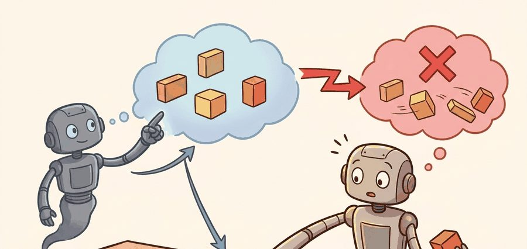
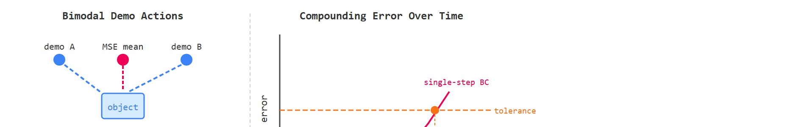

"When two experts would each do something decisive but different, the average of their advice is a hesitation neither would endorse."
A Gripper That Stalled at the Midpoint

This section assumes familiarity with behavioral cloning from section 21.2 and with receding-horizon control from section 7.5. The failure modes identified here motivate the two main remedies developed in this chapter: Action Chunking with Transformers in section 22.2 and diffusion-based action generation in section 22.4. The connection between multimodal action distributions and large-scale data collection recurs in Part VI alongside cross-embodiment generalization in section 35.1.
A robot trained by behavioral cloning reaches toward a cup, hesitates, and knocks it over. The policy was not badly trained: it saw two demonstrators who each reached from a different side, and it averaged them into a path that collides with nothing in either original trajectory, exactly the bimodal averaging failure sketched in Figure 22.1A. That averaging failure is the central hazard of single-step prediction, and it is why modern manipulation systems commit to sequences of dozens of actions at once rather than deciding moment by moment. The sections that follow build the vocabulary for compounding error, mode collapse, and temporal coupling, showing exactly where single-step regression breaks down before the remedies in sections 22.2 and 22.4.
Before going further: a single-step policy predicts one action $a_t$ from the current observation $o_t$, then waits for the next observation before predicting again, in contrast to committing to several actions at once. The formal definition is developed later in "Why One-Step Actions Are Too Myopic"; the mechanism and worked example below already lean on this one-action-at-a-time picture, so keep it in mind now.
Two expert teleoperators each grasp the same cup flawlessly, one from the left and one from the right; train a policy on both and it learns to drive its gripper straight down onto the rim, the one place neither human ever touched. That counterintuitive collision is the signature of single-step prediction, and unpacking why it happens gives us the mental model the rest of this chapter builds on: first we define the object of study, then we connect it to the agent loop, then we test it with a compact implementation.
The key question in Why single-step prediction fails on real manipulation is practical: what must the agent know, what can it observe, what action is available, and what evidence shows that the action worked under the stated conditions?
A representation earns its place when it changes the measurable action interface. In why single-step prediction fails on real manipulation, the reader should keep asking which decision becomes easier, safer, or more reliable.
For Why single-step prediction fails on real manipulation, the practical design rule is to make the interface inspectable before optimization begins: inputs, outputs, units, latency, bounds, and failure labels should all be visible in the saved artifact. Concretely, Zhao et al. (2023) found that single-step behavioral cloning on ALOHA bimanual tasks achieved roughly 50% success on a cup-transfer task, while ACT (Action Chunking with Transformers) with $H = 100$ chunking reached over 90% under identical hardware and data conditions. The gap was not model capacity: it was the inability of single-step regression to commit to a coherent grasp trajectory across the 1-2 second contact phase.
Single-step regression collapses a multimodal action distribution to its mean. On the ALOHA platform (a low-cost bimanual teleoperation rig, described further in the Application Example below) at 50 Hz, that mean often falls between two valid gripper trajectories. The fingertip lands directly above the cup rim, where neither demonstrator ever went. The robot then approaches downward and contacts the object edge instead of the intended grasp surface.
So far: mean-squared-error regression averages two valid, opposite-side grasp trajectories into a single collision course, because the mean of two correct answers is not itself a correct answer. The rest of this callout traces how that first bad contact is sensed and how it compounds.
The wrist force/torque (F/T) sensor, which measures the contact force and moment at the gripper, registers the resulting force spike as a slip event. The policy replans from this perturbed state, so each cycle starts from a worse observation than the last. A 2 mm positional error at the start of a Franka Panda grasp grows to roughly 8 mm after four 20 ms control cycles at typical joint-space drift rates in practice; that typically exceeds the 5 mm tolerance required for reliable pen-in-cup insertion. The joint-velocity trace during the contact phase reveals this failure: a mode-averaged policy produces velocity reversals (sign changes in $\dot{q}$, the joint velocity) that neither demonstrator produced. These reversals appear within the first 200 ms of contact, without waiting for a full episode rollout.
Trace the bimodal collapse with concrete numbers. Two demonstrators grasp the same cup. Demo A approaches from the left at gripper x-position $-4$ cm (relative to the cup center); demo B approaches from the right at $+4$ cm. Both are valid; the cup center at $0$ cm is occupied by the cup itself.
Step 1, the dataset at this observation contains two action clusters: $\{-4, -4, -4\}$ and $\{+4, +4, +4\}$ cm. Step 2, the MSE objective minimizes $\sum (\hat{x} - x_i)^2$, whose minimizer is the arithmetic mean: $\hat{x} = (-4 -4 -4 +4 +4 +4)/6 = 0$ cm. Step 3, the policy commands $\hat{x} = 0$ cm, placing the fingertip directly above the cup rim. Step 4, the gripper descends and contacts the rim, not either grasp surface; the wrist F/T sensor logs a force spike of, say, $9$ N versus the $2$ N seen in either demonstration. Step 5, the policy replans from this perturbed, out-of-distribution state, and the next predicted $\hat{x}$ is computed from an observation the training data never contained. The mean of two correct answers is the one answer that is wrong.
Keep one concrete rollout in view. A sensor reading becomes an estimate, the estimate constrains an action, the action changes the world, and the next observation tests the assumption. The section's idea earns its place only if it improves that loop.
from pathlib import Path
dataset_root = Path("robot_demos")
for episode in sorted(dataset_root.glob("episode_*")):
print("inspect", episode.name)
print("next step: convert demonstrations to the LeRobotDataset format")episode_* folder under a local demonstration root and prints its name, then names the LeRobotDataset conversion step that follows before any training begins.Expected output: the printed trace for Why single-step prediction fails on real manipulation should expose the method configuration, the measured evidence field, and the failure label. If one of those fields is missing or unchanged under the perturbation, the example is not yet an evaluation artifact.
The from-scratch fragment should expose the assumption behind single-step behavioral cloning with delayed correction, compounding error, and contact-rich recovery labels. For serious runs, use LeRobot, robomimic, ACT, Diffusion Policy, VQ-BeT, ALOHA, GELLO, or UMI with the same manifest and evaluator.
A single-step policy predicts $a_t$ from the current observation $o_t$. That representation fits low-level control, but imitation datasets often contain temporally extended intent: reach, align, close, lift, retreat. If the policy regresses one action at a time, small ambiguity in the next instant can create jitter, indecision, or mode averaging between incompatible futures, which is the structural collapse that motivates everything in this chapter.
A policy that commits to one action at a time is a navigator who takes one step, closes their eyes, then opens them again to find the world has already moved on without them.
That moved-on world is not just disorienting; in manipulation it is physically unrecoverable, which is what turns one-step myopia from an annoyance into outright failure.
Compounding error matters in embodied AI because physical contact is irreversible on the timescale of a control cycle. A 2 mm positional overshoot during approach does not reset. It becomes the starting state for the next prediction, which inherits the error and may add its own. On a rigid manipulator running at 50 Hz, errors accumulate across dozens of cycles. No single cycle's loss signal grows large enough to trigger a corrective reflex until late. Tasks requiring precise fingertip placement, such as peg insertion or cup grasping, therefore fail not from one large mistake but from a cascade of small ones that cross the tolerance boundary late in the trajectory.
The mechanism is a feedback loop between prediction error and state drift. Each predicted action $\hat{a}_t$ deviates slightly from the demonstration action $a_t^*$. Executing $\hat{a}_t$ moves the robot to a state $s_{t+1}$ that never appeared in the training distribution. The next observation $o_{t+1}$ is therefore out-of-distribution, so the next prediction deviates further. Cumulative state error $\Delta_t = \|s_t^\pi - s_t^{\text{demo}}\|$ grows roughly linearly with time when errors are independent. It grows faster once the task enters a contact-rich phase, where small position errors produce large force deviations. A 1 mm joint-space offset at the start of a grasp is imperceptible to a human observer. Yet at typical joint-space drift rates, after just 10 control cycles at 50 Hz it can plausibly displace the fingertip by 5 mm, enough to miss a standard M6 peg hole (a 6 mm diameter alignment socket used in peg-in-hole benchmarks) entirely; the exact multiplier depends on the manipulator's joint-space gain and is not a fixed physical constant. The robot has failed a precision task in under 200 ms without ever making a single "large" mistake. Figure 22.1B contrasts both failure routes side by side: mode averaging on the left and the diverging error curve on the right.

Think of navigating a canoe down a river by making one paddle stroke at a time and then closing your eyes to consult a map before the next stroke. Each stroke lands slightly off course, and the current carries the boat into water the map never showed. Your next glance at the map describes a river bend that no longer matches where you actually are, so your next stroke is planned from faulty information. The farther you drift from the charted channel, the less the map helps, and each correction must first undo accumulated drift before it can make progress. A robot replanning from a single predicted action at every control cycle is in exactly this position: the world it observes after each step is one its training data never covered, and errors build on errors with no reset available.
Input: demonstration dataset $\mathcal{D} = \{(o_t, a_t)\}$, trained single-step policy $\pi_\theta$, evaluation rollout of length $T$
Output: failure category label $\ell \in \{\text{mode-avg}, \text{compound-err}, \text{contact-jitter}, \text{recovery-gap}\}$ and corrective chunk size $H^*$
A common assumption is that single-step prediction fails because the model is too small or the dataset is too small, and that scaling up solves the problem. This is wrong in the embodied AI context: the failure is structural, not statistical. Even a perfect model trained on unlimited data still collapses a multimodal action distribution to its mean, because mean-squared-error regression has no mechanism to represent multiple valid futures simultaneously. Physical contact makes this fatal: the averaged action moves the robot to a state that appears in neither demonstration branch, and from that out-of-distribution state every subsequent prediction compounds the error irreversibly. The correct mental model is that single-step regression is the wrong loss class for multimodal distributions, regardless of model size or data volume; the remedy is a generative model (diffusion, flow matching, or a mixture head) that can represent the full distribution over next actions.
Bimodal mode averaging is the canonical failure of mean-regression on multimodal demonstration data. When two demonstrators grasp the same object from opposite sides, a mean-squared-error policy predicts the average gripper pose, which is directly above the object and collides with it on descent. Neither demonstrator would ever choose that action. This is not a data-quality problem: it is a structural failure of single-step regression whenever the training distribution has multiple valid next actions for the same observation. Action chunking alone does not solve this; it must be paired with a generative model (diffusion, flow matching, or a mixture head) that can represent the full distribution over futures rather than collapsing it to a single prediction.
If a generative loss class fixes mode averaging at a single instant, the complementary fix for the compounding error across instants is to stop deciding one instant at a time. Action chunking predicts a horizon of actions $A_t = (a_t, a_{t+1}, \ldots, a_{t+H-1})$. The deployment controller executes only part of the chunk, observes again, then replans. This is receding-horizon imitation: the model commits to a short temporal plan without losing feedback.
A chunk is not just more actions. It is a compact declaration of near-future intent, which lets the model represent coordinated moves such as approach, grasp, and lift as one coherent decision.
This is temporal coupling: the individual actions inside a chunk, reach, align, close, are not independent decisions, they are joint commitments that only make sense together, the way "align" is only the right action if "close" is coming next against the same grasp target. Single-step prediction cannot represent this coupling at all, because it re-decides from scratch at every instant with no memory of which future the current action was meant to serve; that is what lets it drift into contradictory partial motions such as aligning for one grasp pose and closing on another. Action chunking fixes this by construction: predicting $A_t = (a_t, \ldots, a_{t+H-1})$ as one output forces the coupled sub-actions to be mutually consistent, since they come from a single forward pass conditioned on the same observation.
Consider a specific case: the ACT policy trained on ALOHA bimanual demonstrations uses a chunk size of $H = 100$ at 50 Hz, meaning each inference call covers 2 seconds of planned motion. The controller executes only the first 20 actions (0.4 s), then replans. On a cup-transfer task, this kept the gripper trajectory smooth across the pick-to-place transition where single-step behavioral cloning produced oscillation at the handoff point (Zhao et al., 2023, Table 2). The same chunk size would be too coarse for a task requiring sub-centimeter fingertip repositioning, where $H = 10$ at 100 Hz is more typical.
When configuring ACT or Diffusion Policy, set chunk_size (the action_horizon parameter in the HuggingFace LeRobot config) to cover the longest uninterruptible sub-skill in your task, not the full episode. A practical starting rule: measure the median duration of the contact phase in your demonstrations and set chunk_size = contact_duration_seconds * control_frequency_hz. For a 0.4 s grasp at 50 Hz that is 20 steps, not 100. Over-long chunks force the policy to commit to stale plans after contact disturbances; under-short chunks reintroduce the single-step jitter this architecture is designed to cure.
Code Fragment 22.1.2 shows how a chunked policy can be executed in a receding-horizon loop while only applying the first few actions.
# Execute only the first part of each predicted action chunk.
# Replanning keeps feedback while the chunk carries short-horizon intent.
predicted_chunk = ["reach", "align", "close", "lift", "retreat"]
execute_horizon = 2
executed = predicted_chunk[:execute_horizon]
remaining_plan = predicted_chunk[execute_horizon:]
print("execute now:", executed)
print("replan before:", remaining_plan[0])reach, align, close, lift, retreat) is sliced so the controller executes only the first two steps, reach and align, before observing again and replanning ahead of close.The common mistake in Why single-step prediction fails on real manipulation is to celebrate the component score before checking the closed-loop handoff. The failure usually appears at the boundary: stale state, wrong frame, delayed action, saturated actuator, or metric that ignores the real task cost.
A robot learning engineer applying why single-step prediction fails on real manipulation starts by recording the robot body, camera setup, action units, operator source, and split policy for every episode. That record makes it possible to compare ACT with a baseline without changing the task definition midstream.
Treat why single-step prediction fails on real manipulation like a control-room label. If the label does not tell a future debugger what moved, what sensed, or what failed, it is decoration rather than engineering knowledge.
Flow matching as a faster alternative to diffusion for action generation. Conditional flow matching trains a straight-line vector field from noise to action rather than iterating many denoising steps, cutting inference latency by 10-50x while preserving multimodal expressiveness. Black et al. (2024) demonstrated this with pi0 (Physical Intelligence), where a flow-matching action head drives a full-sized dexterous robot in real time at 50 Hz; the design was necessary precisely because diffusion's 100-step denoising budget exceeded the 20 ms control cycle.
Consistency models and one-step action samplers. Consistency Policy (Prasad et al., 2024, CMU) adapts consistency distillation, where a student network is trained to map any noisy point on a diffusion trajectory directly to its clean endpoint, to robot action generation, allowing a single neural-network forward pass to sample a coherent action chunk without iterative denoising. The open problem here is robustness: single-step samplers trained on small manipulation datasets still collapse under distribution shift that multi-step diffusion survives, and no principled criterion yet predicts when the faster sampler is safe to use.
Adaptive chunk-size selection conditioned on contact state. Fixed chunk sizes are a structural compromise: a chunk long enough to commit through a grasp is too long to recover from a slip. Recent work from Stanford (Chi et al., 2024, UMI on Legs) and from Berkeley's RAIL lab (as of 2024, unpublished experiments) explores variable-horizon receding control that shortens the committed chunk when an F/T sensor detects contact ambiguity. No published system yet learns the chunk-length schedule end-to-end from demonstrations.
Open problem for a PhD student: How should a policy learn when to replan early rather than committing to the remainder of a predicted chunk? The bottleneck is the absence of a training signal for "this chunk went stale": demonstrations contain no annotation of the moment when the original plan became invalid. A tractable entry point is to instrument LeRobot rollouts with force-torque and proprioceptive divergence signals, then use those signals as a learned early-termination criterion for the chunk executor, comparing against fixed-horizon baselines on contact-rich tasks in simulation before transferring to hardware.
Stanford's ALOHA system hit exactly this wall: single-step behavioral cloning on tasks like threading a zip tie or slotting a battery stalled near 50% success because the policy averaged across the multiple valid sub-trajectories in the human teleoperation data. Switching to Action Chunking with Transformers, which commits to a 100-step (2 second) horizon per inference, lifted those same contact-rich tasks above 80-90% on identical hardware. The chunk is what lets the robot follow through on one coherent grasp instead of hesitating at the average of two.
Goal: See MSE regression collapse a bimodal action distribution to its empty middle, then watch the collapse vanish when you switch loss class, all in under 30 minutes on a laptop CPU.
Tools needed: Python with NumPy, PyTorch (or scikit-learn), and Matplotlib. No robot or GPU required.
Procedure: Generate a synthetic dataset where a single scalar observation $o = 0$ maps to two action clusters, samples drawn from $\mathcal{N}(-4, 0.3)$ and $\mathcal{N}(+4, 0.3)$ in equal proportion. Train a small MLP to predict the action from the observation under mean-squared-error loss. Then train a second head that outputs a 2-component mixture density (a weighted sum of two Gaussians, so the model can output two separate predicted clusters instead of one averaged point) or a tiny diffusion/flow head on the same data.
What to vary: the cluster separation (move the means from $\pm 1$ to $\pm 8$), the mixing ratio (50/50 versus 80/20), and the noise width. Optionally add a second observation value with a unimodal target as a control.
What to observe: the MSE model's prediction sits near $0$, the gap between the two modes where no training point ever landed, and its predicted point barely moves as you widen the separation. The mixture/generative head instead samples from both clusters. Plot predicted action versus a histogram of true actions to make the failure visually obvious, then connect it back to the cup-rim collision in Figure 22.1A.
Can you name the observation, state estimate, action, success metric, and most likely failure mode for why single-step prediction fails on real manipulation? If not, the system boundary is still too vague.
Why single-step prediction fails on real manipulation becomes useful when it is tied to a closed-loop contract. In this Part V section on Why single-step prediction fails on real manipulation, the contract names the observation stream, the state estimate, the action representation, the timing budget, and the evaluation artifact. Without that contract, a model can look capable in a notebook while failing the first time a sensor drops a frame or a controller saturates.
For Why single-step prediction fails on real manipulation, separate the conceptual claim, the systems claim, and the evidence claim. A plausible mechanism, a clean interface, and a closed-loop result are different claims; the section should keep their evidence separate.
| Tool or Library | Role in the Topic | Builder Advice |
|---|---|---|
| LeRobot (HuggingFace) | Provides the ACT and Diffusion Policy configs with action_horizon as a first-class parameter, plus the LeRobotDataset format used for both training and rollout logging. | Start here: it lets you reproduce the Zhao et al. cup-transfer chunking result without writing a custom trainer. |
| robomimic | Reference implementations of single-step BC, BC-RNN, and BC-Transformer baselines on the same demonstration loader, so you can measure the mode-averaging gap directly. | Use it to build the single-step baseline you will diagnose before adding chunking. |
| MuJoCo | Contact-force simulation for peg-in-hole and grasp tasks, with sensor output that exposes the slip-event force spikes described in the Mechanism callout. | Use its contact-force sensors to plot cumulative state-error drift per episode under different chunk sizes. |
| ALOHA / GELLO teleop | Low-cost bimanual hardware that produces the 50 Hz demonstrations where $H = 100$ chunking originated. | Match its 50 Hz cadence when setting chunk_size so your contact-phase duration math stays valid. |
ROS 2 (franka_ros2) | Real-time action server for driving a Franka Panda arm, where the diffusion denoising budget must fit inside the 20 ms control cycle. | Use it only after the policy passes simulation; the hard real-time deadline is where chunked inference latency bites. |
For Why single-step prediction fails on real manipulation, start with a small baseline that logs inputs, outputs, units, timestamps, and termination conditions before moving to Gymnasium or PettingZoo. The library run should keep the same artifact schema, so the comparison remains a same-task evaluation.
When Why single-step prediction fails on real manipulation fails, avoid labeling the whole method as weak. First assign the failure to perception, state estimation, planning, control, timing, data coverage, or evaluation. Then rerun one controlled perturbation that isolates the suspected cause. This pattern turns a disappointing rollout into a reusable diagnostic asset.
Why single-step prediction fails on real manipulation should be evaluated through four lenses: the learning objective, the robot interface, the data artifact, and the deployment failure mode. Action generators differ mainly in how they represent time, uncertainty, and multimodality across the next chunk of motion.
For single-step prediction exposes compounding error, delayed correction, contact ambiguity, and recovery gaps, define observations, action representation, dataset source, rollout evaluator, and failure labels before training. Then compare baseline and library implementation on the same configuration.
For single-step prediction exposes compounding error, delayed correction, contact ambiguity, and recovery gaps, each demonstration binds operator behavior, robot body, sensor calibration, action representation, and reset distribution. Changing one field creates a new evaluation contract.
| Agent Lens | Question To Answer | Concrete Evidence |
|---|---|---|
| Curriculum and depth | What concept is new here, and why does Part V need it? | A definition, a worked example, and a failure case tied to the perception-action loop. |
| Code and tools | Which maintained tool removes boilerplate after the from-scratch baseline? | ACT, Diffusion Policy, flow matching, VQ-BeT, ALOHA evaluated against the same task contract. |
| Data and evaluation | What distribution produced the behavior, and where can it break? | Train, validation, and stress splits with explicit robot, camera, timing, and license metadata. |
| Publication quality | Can the reader reproduce the claim without hidden context? | Captions, bibliography cards, cross-links, and a same-artifact audit trail. |
Do not claim that why single-step prediction fails on real manipulation improves robot learning unless the baseline and the proposed method share the same robot, task split, reset distribution, success metric, and random seed policy. Otherwise the comparison may be measuring dataset difficulty rather than method quality.
For single-step prediction exposes compounding error, delayed correction, contact ambiguity, and recovery gaps, judge the method by closed-loop recovery, latency, stability, contact behavior, and failure labels under the same robot, reset distribution, cameras, and evaluator.
Who: A robot learning engineer evaluating single-step behavioral cloning with delayed correction, compounding error, and contact-rich recovery labels on the same manipulation benchmark, robot, camera setup, and reset protocol.
Situation: The engineer needs to decide whether why single-step prediction fails on real manipulation is ready for a weekly policy comparison across 120 demonstrations and 30 held-out rollouts.
Decision: They keep the smallest runnable baseline for single-step behavioral cloning with delayed correction, compounding error, and contact-rich recovery labels, then compare the maintained implementation under the same manifest, seed, split, and rollout evaluator.
Result: The team gets one artifact for single-step behavioral cloning with delayed correction, compounding error, and contact-rich recovery labels with task success, intervention labels, timing violations, recovery behavior, and failure categories.
Lesson: single-step behavioral cloning with delayed correction, compounding error, and contact-rich recovery labels earns trust only when the data contract, action representation, and rollout evaluator are versioned together.
Before leaving this section, write one sentence that links why single-step prediction fails on real manipulation to each of these connected chapters: Chapter 21: Imitation Learning, Chapter 23: Teleoperation and Data Collection, Chapter 35: Robot Foundation Models and Cross-Embodiment Learning. If any link feels forced, the section needs a sharper boundary or a clearer prerequisite recap.
Why single-step prediction fails on real manipulation is useful when it makes the perception-action loop more reliable, not when it merely adds a more impressive model name.
Design a method-matched experiment for Why single-step prediction fails on real manipulation. Specify the environment, observation schema, action interface, metric, and one perturbation that targets the section's core assumption.
Beginner (weekend): Build a bimodal failure visualizer in Gymnasium's FetchReach-v3 environment: collect 20 demonstrations from two opposing approach directions, train a single-step MSE policy, and plot the predicted action distribution at the ambiguous timestep to see mode averaging in action. The key challenge is constructing observations that are identical for both approach directions so the distribution overlap is genuine rather than an artifact of different state representations.
Intermediate (1-2 weeks): Implement a receding-horizon chunked policy using LeRobot's ACT config on a MuJoCo peg-in-hole task, then sweep chunk size from 1 to 50 steps and log cumulative state-error drift per episode using MuJoCo's contact force sensor output. The key challenge is implementing the partial-execution loop correctly so that only the first execute_horizon actions are sent to the MuJoCo controller before replanning, while keeping the action-chunk latency inside the 20 ms control budget.
Advanced (3-4 weeks): Integrate a Diffusion Policy action head into a ROS2 node that drives a real or simulated Franka Panda arm via the franka_ros2 driver, and compare single-step BC against chunked diffusion on a cup-transfer task at 50 Hz using the LeRobot dataset format for both training and evaluation logging. The key challenge is bridging the diffusion model's multi-step denoising inference time (typically 10-100 ms per sample) into a hard real-time ROS2 action server without introducing jitter that destabilizes the impedance controller.
This section grounded why single-step prediction fails on real manipulation in an explicit robot-data contract: observations, actions, demonstrations, evaluation splits, and failure labels. The next reading step is Section 22.2, where the same contract is carried into the next technique or chapter.
Zhao, T. Z. et al. (2023). Learning Fine-Grained Bimanual Manipulation with Low-Cost Hardware. RSS.
This paper introduces ALOHA and Action Chunking with Transformers for bimanual manipulation. It is central for understanding why predicting chunks can stabilize high-frequency robot control.
Diffusion Policy frames action generation as conditional denoising over robot action trajectories. Read it for multimodal action distributions, receding horizon control, and the implementation details behind modern diffusion robot policies.
Lipman, Y. et al. (2022). Flow Matching for Generative Modeling.
Flow matching gives the generative-model background behind many faster action samplers. It is useful when comparing diffusion-style iterative denoising with direct vector-field training.
The project page summarizes the hardware, data collection setup, and ACT policy used for fine-grained bimanual tasks. Builders should use it to connect the paper's algorithm to an actual low-cost robot platform.
real-stanford/diffusion_policy: Official Diffusion Policy Code.
The official code provides training and evaluation examples for state-based and vision-based tasks. It is the shortest route from the section's theory to a runnable policy-learning experiment.